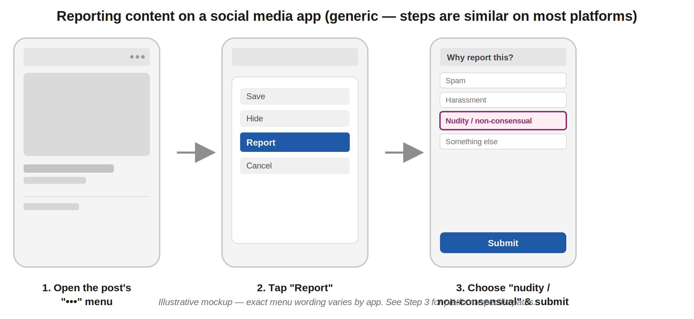
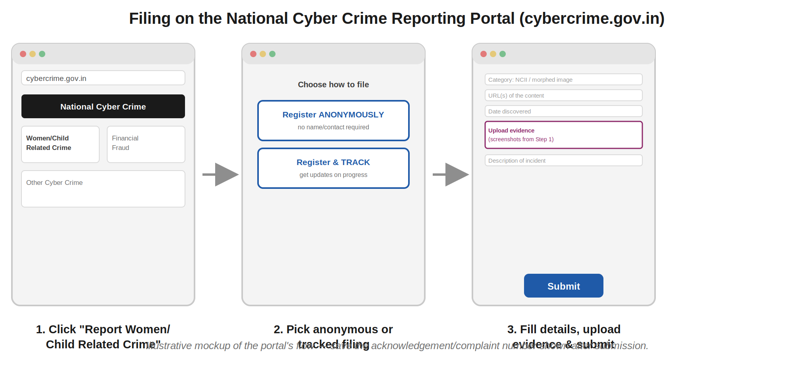

Intimate Image Leaks (NCII) Response
An action-oriented Standard Operating Procedure (SOP) under Indian law to secure content removal, access safety resources, and initiate legal proceedings.
This is not your fault. Indian law treats non-consensual intimate image sharing as a serious crime. There are real, working tools operated by the government and platforms to get content taken down and hold the perpetrator accountable.
Guide Legend
Preserve evidence before requesting takedowns
Once you report images, platforms will remove them. This is the goal, but it also destroys the evidence. Take these actions before filing reports:
- Take full-screen screenshots showing the intimate media, the browser URL bar, the profile username, date, and view or like counts.
- Copy and save the direct URL/link of each specific post, message, or profile.
- If sent directly (WhatsApp, Telegram, email), save the raw messages. Keep chat headers and metadata intact.
- Keep a simple log file listing: Date Discovered, Platform, URL, and Actions Taken.
- Back up these records to a secure cloud account or email them to yourself so they aren't lost if your phone is compromised.
Use StopNCII.org to prevent further upload spread
StopNCII.org is a free, privacy-preserving tool operated by the Revenge Porn Helpline. It creates a digital fingerprint ("hash") of the image on your device—the image itself never leaves your device or gets uploaded to their server.
- The generated hash is shared with participating social networks (Meta/Instagram, TikTok, Google, Reddit, Bumble, OnlyFans, X, etc.) to block matching uploads automatically, preventing future re-sharing.
- Eligibility: You must be 18 or older, be identifiable in the image, and have a copy of the image on your device (which you will select locally for hash generation).
- It accepts deepfake, synthetic, and AI-morphed nude images.
- This is a preventative tool, not a legal action, and does not involve law enforcement.
Report directly to the hosting social media platform
Every major platform has a dedicated path for reporting non-consensual intimate imagery (NCII). These are processed much faster than general reporting categories:
- Instagram / Facebook: Choose "nudity or sexual activity" → "share without my permission".
- X (Twitter): Select "non-consensual nudity" from the reporting interface.
- Telegram: Report channels/chats directly inside the app, or email abuse@telegram.org.
- Websites / Forums: Look for a "DMCA", "Report Abuse", or "Content Removal" link in the footer.
- IT Rules, 2021 (Rule 3(2)(b)): Platforms in India are legally obligated to remove or block access to reported intimate/nude/morphed media within 24 hours of a complaint.
- If a platform fails to act within 24 hours, you can file a government appeal at the Grievance Appellate Committee (GAC) portal at gac.gov.in.

Click image to view high-resolution version
Submit a removal request to Google Search
Even if the hosting site refuses to remove the content, you can prevent it from showing up in search indexes and search queries:
- Use Google's official "Remove personal sexual images" tool to submit removal requests for URLs showing search hits.
- This covers real intimate photos, deepfakes, and synthetic/AI-generated images of you.
- You can check request statuses via Google's "Results about you" dashboard at myactivity.google.com.
- Note: This removes it from Google search results, but does not delete it from the host website. You still need Steps 3, 5, and 6 to take down the source file.
File an online report on the National Cyber Crime Portal
This is the official, centralized government channel to trigger official platform notices and launch investigations.
- Visit cybercrime.gov.in and click "Report Women/Child Related Crime".
- You can choose to file anonymously or using your details. Sharing details helps local cells follow up.
- Upload all collected screenshots, URLs, dates, and account details. Save the generated complaint number.
- Call the Cyber Crime Helpline on 1930 for immediate assistance or assistance freezing financial extortion funds.
- If dealing with fake phone numbers, SMS, or WhatsApp sextortion schemes, also file on the DOT's Chakshu portal at sancharsaathi.gov.in to block the IMEI/device.

Click image to view high-resolution version
File a First Information Report (FIR) at a police station
You can transition your online report to a formal criminal case. In India, cybercrimes have no jurisdictional limits.
- You can file a "Zero FIR" at any police station or cyber cell in India, regardless of where the crime happened or where you reside.
- Many cities have dedicated Cyber Crime Police Stations or local Women's Cyber Cells.
- Bring your ID, printed copies of your evidence log (screenshots, URLs), and your online cybercrime.gov.in complaint number.
- Police are legally bound to register your FIR. If refused, escalate to the Superintendent of Police (SP) or the State Women's Commission.
Visit a One Stop Centre (Sakhi Centre) for combined aid
One Stop Centres (OSCs), established under the Ministry of Women and Child Development (Mission Shakti), act as a single-window support mechanism for women facing violence or cyber exploitation.
- OSC staff will assist in filing the Cyber Crime portal complaint, drafting the police complaint, and tracking progress.
- They provide free legal assistance, free mental health counseling, medical care, and temporary emergency shelter.
- They coordinate directly with District Legal Services Authorities (DLSA) to assign a free lawyer if needed.
- You can locate nearby centers on our Resources directory page or using our homepage locator.
Acquire free legal aid from DLSA / NALSA
You do not need to hire a private lawyer. Indian law guarantees free legal aid for all women, regardless of income.
- Call the NALSA Helpline on 15100 (or 15750) or visit nalsa.gov.in.
- Every district has a District Legal Services Authority (DLSA) office, which will assign a free advocate to represent you in court or draft legal motions.
- Staff at your local One Stop Centre (Step 7) can initiate this DLSA connection directly.
- A lawyer is far more important, since POCSO obligations and different procedural rules are also triggered
Serve a legal notice to the platform's Grievance Officer
If platforms fail to comply with automated reports, a legal professional can issue a formal legal notice under Section 79 of the IT Act.
- This puts the platform on official legal notice, making them liable as intermediaries (losing their "safe harbour" protection) if they refuse to act.
- A lawyer can also draft and file appeals directly to the Grievance Appellate Committee (GAC).
- This step is optional if the platforms have already complied with automated reports.
Escalate to the National Commission for Women (NCW)
If the police are slow to react, dismissive, or refuse to act, you can approach the NCW to oversee the process.
- Call the NCW 24/7 Helpline on 14490 (or 7827-170-170).
- File a formal complaint online at ncwapps.nic.in.
- The NCW has authority to summon police officers, monitor investigation logs, and coordinate action on serious delays.
- Most states also have a State Commission for Women that can move quickly on local levels.
Seek a High Court "John Doe" (Ashok Kumar) injunction
In cases of viral spread across anonymous hosting domains or sites, a lawyer can petition the High Court for a "John Doe" (Ashok Kumar) order.
- This is a proactive injunction against unidentified persons/domains. It directs internet service providers (ISPs) and platforms to block any matching URL or file hash globally.
- This is also the path to pursue civil compensation and damages from the perpetrator.
Prioritize mental health & psychosocial counseling
This process is emotionally heavy. Pair legal actions with mental health support immediately. You do not have to wait for the case to settle to seek support.
- iCall Helpline (TISS): Call 9152987821 (Mon-Sat, professional psychosocial counseling).
- Vandrevala Foundation: Call 9999 666 555 (Free 24/7 helpline).
- Tele MANAS: Call the government helpline on 14416 (or 1-800-891-4416, 24/7 mental health help).
- One Stop Centres also host on-site counselors for short-term crisis counseling.
If the victim is under 18, or was under 18 when the images were captured, the matter falls under the **Protection of Children from Sexual Offences (POCSO) Act**, which carries much stricter penalties and protective mechanisms.
- Immediate Action: Contact Childline on 1098 immediately. It is a 24/7 dedicated helpline for child protection.
- POCSO e-Box: The National Commission for Protection of Child Rights (NCPCR) operates an online POCSO e-Box at ncpcr.gov.in for direct reporting.
- Special Protections: Under POCSO, child safety is paramount. Law enforcement and judicial officers must protect the minor's identity from public disclosure. Reporting by observers is legally mandatory.
Synthetic, morphed, or AI-generated nude media (deepfakes) are treated with the exact same severity under Indian law as real images.
- The platform's legal obligation to remove content within 24 hours under Rule 3(2)(b) of the IT Rules explicitly covers morphed or synthetically altered images.
- StopNCII.org accepts hashes generated from deepfake images to block future uploads.
- Google's Search Removal Tool explicitly includes categories for removal of synthetic or AI-generated non-consensual sexual content.
- Section 66D, 67, and 67A of the IT Act (impersonation, transmitting explicit material) are fully applicable to morphed content prosecutions.
If someone is threatening to leak your images unless you pay money or provide more images, you are dealing with criminal extortion.
- Do not pay: Paying does not solve the problem. Offenders almost always demand more money once they know you will pay.
- Collect details: Take screenshots of all threat messages, the UPI IDs used for money requests, the phone numbers, and username profiles.
- Report immediately: Call 1930 (Cyber Crime Helpline) to trace the phone numbers and block extortion bank accounts. Report the UPI IDs to your banking provider.
- File the complaint on cybercrime.gov.in as extortion. Police cells have dedicated units to trace these organized extortion rings.
You do not need to memorize these laws to register a complaint. However, referencing them can ensure police officers file the correct FIR sections.
| Statute & Section | Description / Offence | Punishment |
|---|---|---|
| Section 66E, IT Act, 2000 | Capturing, publishing, or transmitting images of a person's private parts without their consent (Violation of Privacy). | Up to 3 years imprisonment or fine up to ₹2 Lakhs, or both. |
| Section 67 / 67A, IT Act, 2000 | Publishing or transmitting sexually explicit or obscene content electronically. | Up to 5 years imprisonment and fine up to ₹10 Lakhs (first conviction). |
| Section 72, IT Act, 2000 | Breach of confidentiality or privacy by someone who had authorized access to the content (e.g. an ex-partner). | Up to 2 years imprisonment or fine up to ₹1 Lakh, or both. |
| Section 77, BNS, 2023 (Replaced IPC Sec 354C) |
Voyeurism: Capturing or circulating images of a woman in a private act without consent. | 1 to 3 years imprisonment (first conviction); 3 to 7 years (subsequent). |
| Section 78, BNS, 2023 (Replaced IPC Sec 354D) |
Stalking: Monitoring a woman's internet, email, or electronic communication without consent. | Up to 3 years imprisonment (first conviction); up to 5 years (subsequent). |
| Section 79, BNS, 2023 (Replaced IPC Sec 509) |
Word, gesture, or act intended to insult the modesty of a woman (e.g. sharing private images online). | Up to 3 years imprisonment with fine. |
| Section 356, BNS, 2023 (Replaced IPC Sec 499) |
Criminal Defamation. | Simple imprisonment up to 2 years, or fine, or both. |
| Rule 3(2)(b), IT Rules 2021 | Intermediaries must remove or disable access to non-consensual intimate or morphed media within 24 hours of complaint. | Loss of safe-harbour immunity for platforms. |